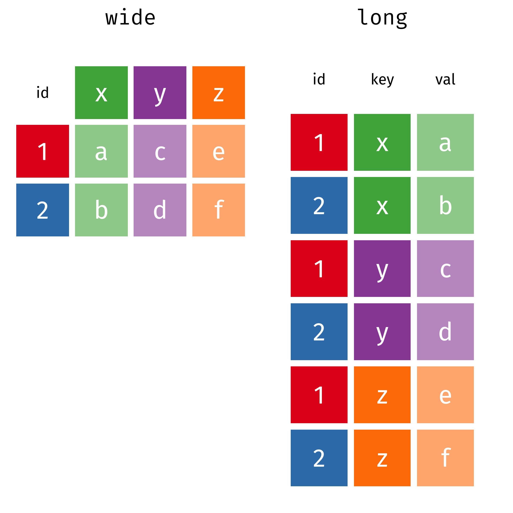
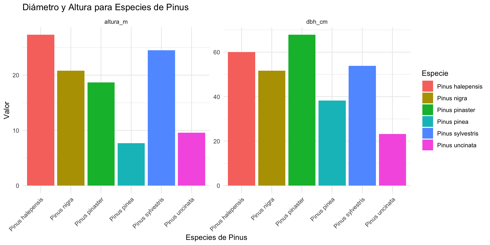

![]()
df <- data.frame(
x = c(1, 2, 3),
y = c("A", "B", "C")
)
df x y
1 1 A
2 2 B
3 3 C

data.frame & tibbledata.framedf <- data.frame(
x = c(1, 2, 3),
y = c("A", "B", "C")
)
df x y
1 1 A
2 2 B
3 3 Ctibbledata.frame incluida en el pkg tibble (tidyverse).library(tibble)
tb <- tibble(
x = c(1, 2, 3),
y = c("A", "B", "C"),
`x al cuadrado` = x^2
)
tb# A tibble: 3 × 3
x y `x al cuadrado`
<dbl> <chr> <dbl>
1 1 A 1
2 2 B 4
3 3 C 9data.frame:
print(df) x y
1 1 A
2 2 B
3 3 Ctibble:
str() de los datosprint(tb)# A tibble: 3 × 3
x y `x al cuadrado`
<dbl> <chr> <dbl>
1 1 A 1
2 2 B 4
3 3 C 9data.frame: las columnas de tipo carácter se convierten automáticamente a factores, a menos que especifiques stringsAsFactors = FALSE.
tibble: nunca convierten caracteres a factores de forma automática.
df <- data.frame(
x = c(1, 2, 3),
y = c("A", "B", "C")
)
str(df)'data.frame': 3 obs. of 2 variables:
$ x: num 1 2 3
$ y: chr "A" "B" "C"tb <- tibble(
x = c(1, 2, 3),
y = c("A", "B", "C")
)
str(tb)tibble [3 × 2] (S3: tbl_df/tbl/data.frame)
$ x: num [1:3] 1 2 3
$ y: chr [1:3] "A" "B" "C"data.frame vs. tibbletibbleTransformar data.frame a tibble
dft <- as_tibble(df)
dft# A tibble: 3 × 2
x y
<dbl> <chr>
1 1 A
2 2 B
3 3 C Crear tibble directamente
arboles <- tibble(
especie = c("Pinus halepensis", "Quercus ilex", "Quercus ilex",
"Pinus pinaster", "Quercus pyrenaica"),
altura_m = c(15, 8, 10, 12, 18),
dbh_cm = c(30, 40, 35, 25, 45),
site = c("plot_A", "plot_B", "plot_C", "plot_A", "plot_B")
)
arboles # A tibble: 5 × 4
especie altura_m dbh_cm site
<chr> <dbl> <dbl> <chr>
1 Pinus halepensis 15 30 plot_A
2 Quercus ilex 8 40 plot_B
3 Quercus ilex 10 35 plot_C
4 Pinus pinaster 12 25 plot_A
5 Quercus pyrenaica 18 45 plot_BCrear tibble transpuesto (tribble)
arboles <- tribble(
~especie, ~altura_m, ~dbh_cm, ~site,
"Pinus halepensis", 15, 30, "plot_A",
"Quercus ilex", 8, 40, "plot_B",
"Quercus ilex", 10, 35, "plot_C",
"Pinus pinaster", 12, 25, "plot_A",
"Quercus pyrenaica", 18, 45, "plot_B"
)
arboles # A tibble: 5 × 4
especie altura_m dbh_cm site
<chr> <dbl> <dbl> <chr>
1 Pinus halepensis 15 30 plot_A
2 Quercus ilex 8 40 plot_B
3 Quercus ilex 10 35 plot_C
4 Pinus pinaster 12 25 plot_A
5 Quercus pyrenaica 18 45 plot_BCrear tibble a partir de listas complejas (enframe)
lista_compleja <- list(
numeros = c(1, 2, 3),
letras = c("A", "B", "C"),
datos = list(
tipo = c("x", "y", "z"),
valores = c(10, 20, 30)
)
)
lc <- enframe(lista_compleja)
lc # A tibble: 3 × 2
name value
<chr> <list>
1 numeros <dbl [3]>
2 letras <chr [3]>
3 datos <named list [2]>lc # A tibble: 3 × 2
name value
<chr> <list>
1 numeros <dbl [3]>
2 letras <chr [3]>
3 datos <named list [2]>lc[[1]][1] "numeros" "letras" "datos" lc[[2]][[1]]
[1] 1 2 3
[[2]]
[1] "A" "B" "C"
[[3]]
[[3]]$tipo
[1] "x" "y" "z"
[[3]]$valores
[1] 10 20 30lc[[2]][1][[1]]
[1] 1 2 3lc[[2]][2][[1]]
[1] "A" "B" "C"lc[[2]][3][[1]]
[[1]]$tipo
[1] "x" "y" "z"
[[1]]$valores
[1] 10 20 30as.data.frame(lc[[2]][3]) tipo valores
1 x 10
2 y 20
3 z 30Crear tibble a partir de listas complejas (enframe) (II)
datos_forestales <- list(
parcela_1 = list(
especie = c("Pinus halepensis", "Quercus ilex"),
n_ind = c(10, 5),
dbh_cm = c(25, 30)
),
parcela_2 = list(
especie = c("Pinus pinaster", "Quercus pyrenaica"),
n_ind = c(15, 8),
dbh_cm = c(20, 35)
),
parcela_3 = list(
especie = c("Pinus sylvestris"),
n_ind = c(12),
dbh_cm = c(40)
)
)d <- enframe(datos_forestales, name = "parcela", value = "contenido")
d# A tibble: 3 × 2
parcela contenido
<chr> <list>
1 parcela_1 <named list [3]>
2 parcela_2 <named list [3]>
3 parcela_3 <named list [3]>library(tidyr)
d |>
unnest_wider(contenido) |>
unnest(c(especie, n_ind, dbh_cm)) # A tibble: 5 × 4
parcela especie n_ind dbh_cm
<chr> <chr> <dbl> <dbl>
1 parcela_1 Pinus halepensis 10 25
2 parcela_1 Quercus ilex 5 30
3 parcela_2 Pinus pinaster 15 20
4 parcela_2 Quercus pyrenaica 8 35
5 parcela_3 Pinus sylvestris 12 40library(tidyverse)
d <- read_csv("TU_RUTA/ifn_sn_tree.csv")d# A tibble: 8,786 × 10
plot aspect slope tree_id specie dbh height tree_density_factor
<chr> <dbl> <dbl> <dbl> <chr> <dbl> <dbl> <dbl>
1 0792 270 27 1 Pinus halepensis 8.5 3.8 127.
2 0792 270 27 2 Pinus halepensis 15.4 4.90 31.8
3 0792 330. 40 10 Pinus halepensis 13.4 6.70 31.8
4 0792 330. 40 12 Pinus halepensis 13.0 6.90 31.8
5 0792 330. 40 1 Quercus ilex ssp… 13 2.40 31.8
6 0792 330. 40 2 Quercus ilex ssp… 10.0 2 127.
7 0792 330. 40 3 Quercus ilex ssp… 14.0 2 31.8
8 0792 330. 40 4 Quercus ilex ssp… 13.4 2.60 31.8
9 0792 330. 40 5 Quercus ilex ssp… 10.2 2.3 127.
10 0792 330. 40 6 Quercus ilex ssp… 10.4 2 127.
# ℹ 8,776 more rows
# ℹ 2 more variables: tree_quality_wood <dbl>, prov <chr>glimpse(d)Rows: 8,786
Columns: 10
$ plot <chr> "0792", "0792", "0792", "0792", "0792", "0792", "0…
$ aspect <dbl> 270.0, 270.0, 330.3, 330.3, 330.3, 330.3, 330.3, 3…
$ slope <dbl> 27, 27, 40, 40, 40, 40, 40, 40, 40, 40, 40, 40, 40…
$ tree_id <dbl> 1, 2, 10, 12, 1, 2, 3, 4, 5, 6, 7, 8, 9, 11, 1, 3,…
$ specie <chr> "Pinus halepensis", "Pinus halepensis", "Pinus hal…
$ dbh <dbl> 8.50, 15.45, 13.40, 12.95, 13.00, 10.05, 14.05, 13…
$ height <dbl> 3.8, 4.9, 6.7, 6.9, 2.4, 2.0, 2.0, 2.6, 2.3, 2.0, …
$ tree_density_factor <dbl> 127.32395, 31.83099, 31.83099, 31.83099, 31.83099,…
$ tree_quality_wood <dbl> 2, 2, 2, 2, 5, 5, 5, 5, 5, 5, 5, 5, 5, 5, 2, 2, 2,…
$ prov <chr> "Almeria", "Almeria", "Almeria", "Almeria", "Almer…d |>
arrange(slope)# A tibble: 8,786 × 10
plot aspect slope tree_id specie dbh height tree_density_factor
<chr> <dbl> <dbl> <dbl> <chr> <dbl> <dbl> <dbl>
1 0811 202. 7.5 1 Pinus sylvestris 13.6 6.70 31.8
2 0811 202. 7.5 2 Pinus sylvestris 14.6 6.30 31.8
3 0811 202. 7.5 3 Pinus sylvestris 15.1 6.20 31.8
4 0811 202. 7.5 4 Pinus sylvestris 13.6 5.40 31.8
5 0811 202. 7.5 5 Pinus sylvestris 13 6.10 31.8
6 0811 202. 7.5 6 Pinus sylvestris 13.8 6.70 31.8
7 0811 202. 7.5 7 Pinus sylvestris 14.6 6.40 31.8
8 0811 202. 7.5 8 Pinus sylvestris 16.4 6.80 31.8
9 0811 202. 7.5 9 Pinus sylvestris 20.5 7.30 31.8
10 0811 202. 7.5 10 Pinus sylvestris 13.9 5.90 31.8
# ℹ 8,776 more rows
# ℹ 2 more variables: tree_quality_wood <dbl>, prov <chr>d |>
arrange(desc(slope))# A tibble: 8,786 × 10
plot aspect slope tree_id specie dbh height tree_density_factor
<chr> <dbl> <dbl> <dbl> <chr> <dbl> <dbl> <dbl>
1 0792 330. 40 10 Pinus halepensis 13.4 6.70 31.8
2 0792 330. 40 12 Pinus halepensis 13.0 6.90 31.8
3 0792 330. 40 1 Quercus ilex ssp… 13 2.40 31.8
4 0792 330. 40 2 Quercus ilex ssp… 10.0 2 127.
5 0792 330. 40 3 Quercus ilex ssp… 14.0 2 31.8
6 0792 330. 40 4 Quercus ilex ssp… 13.4 2.60 31.8
7 0792 330. 40 5 Quercus ilex ssp… 10.2 2.3 127.
8 0792 330. 40 6 Quercus ilex ssp… 10.4 2 127.
9 0792 330. 40 7 Quercus ilex ssp… 13 2.10 31.8
10 0792 330. 40 8 Quercus ilex ssp… 7.75 2 127.
# ℹ 8,776 more rows
# ℹ 2 more variables: tree_quality_wood <dbl>, prov <chr>d |>
arrange(specie, desc(height))# A tibble: 8,786 × 10
plot aspect slope tree_id specie dbh height tree_density_factor
<chr> <dbl> <dbl> <dbl> <chr> <dbl> <dbl> <dbl>
1 0924 198 40 2 Acacia spp. 25.6 12.1 14.1
2 0924 198 40 3 Acacia spp. 25.7 NA 14.1
3 1247 161. 40 1 Acer opalus 14.4 9.10 31.8
4 1264 194. 40 2 Acer opalus 17.7 7.80 31.8
5 1264 194. 40 4 Acer opalus 15.8 7.60 31.8
6 1264 194. 40 3 Acer opalus 19.1 6.70 31.8
7 1264 194. 40 1 Acer opalus 13.2 6.5 31.8
8 1247 161. 40 2 Acer opalus 12.6 5 31.8
9 0904 167. 16 12 Alnus glutinosa 32.4 16.6 14.1
10 0904 167. 16 15 Alnus glutinosa 32.2 15.2 14.1
# ℹ 8,776 more rows
# ℹ 2 more variables: tree_quality_wood <dbl>, prov <chr>d |>
relocate(plot, .after = prov)# A tibble: 8,786 × 10
aspect slope tree_id specie dbh height tree_density_factor
<dbl> <dbl> <dbl> <chr> <dbl> <dbl> <dbl>
1 270 27 1 Pinus halepensis 8.5 3.8 127.
2 270 27 2 Pinus halepensis 15.4 4.90 31.8
3 330. 40 10 Pinus halepensis 13.4 6.70 31.8
4 330. 40 12 Pinus halepensis 13.0 6.90 31.8
5 330. 40 1 Quercus ilex ssp. ball… 13 2.40 31.8
6 330. 40 2 Quercus ilex ssp. ball… 10.0 2 127.
7 330. 40 3 Quercus ilex ssp. ball… 14.0 2 31.8
8 330. 40 4 Quercus ilex ssp. ball… 13.4 2.60 31.8
9 330. 40 5 Quercus ilex ssp. ball… 10.2 2.3 127.
10 330. 40 6 Quercus ilex ssp. ball… 10.4 2 127.
# ℹ 8,776 more rows
# ℹ 3 more variables: tree_quality_wood <dbl>, prov <chr>, plot <chr>d |>
rename(calidad_madera = tree_quality_wood)# A tibble: 8,786 × 10
plot aspect slope tree_id specie dbh height tree_density_factor
<chr> <dbl> <dbl> <dbl> <chr> <dbl> <dbl> <dbl>
1 0792 270 27 1 Pinus halepensis 8.5 3.8 127.
2 0792 270 27 2 Pinus halepensis 15.4 4.90 31.8
3 0792 330. 40 10 Pinus halepensis 13.4 6.70 31.8
4 0792 330. 40 12 Pinus halepensis 13.0 6.90 31.8
5 0792 330. 40 1 Quercus ilex ssp… 13 2.40 31.8
6 0792 330. 40 2 Quercus ilex ssp… 10.0 2 127.
7 0792 330. 40 3 Quercus ilex ssp… 14.0 2 31.8
8 0792 330. 40 4 Quercus ilex ssp… 13.4 2.60 31.8
9 0792 330. 40 5 Quercus ilex ssp… 10.2 2.3 127.
10 0792 330. 40 6 Quercus ilex ssp… 10.4 2 127.
# ℹ 8,776 more rows
# ℹ 2 more variables: calidad_madera <dbl>, prov <chr>d |>
select(plot, specie, dbh, height, tree_quality_wood)# A tibble: 8,786 × 5
plot specie dbh height tree_quality_wood
<chr> <chr> <dbl> <dbl> <dbl>
1 0792 Pinus halepensis 8.5 3.8 2
2 0792 Pinus halepensis 15.4 4.90 2
3 0792 Pinus halepensis 13.4 6.70 2
4 0792 Pinus halepensis 13.0 6.90 2
5 0792 Quercus ilex ssp. ballota 13 2.40 5
6 0792 Quercus ilex ssp. ballota 10.0 2 5
7 0792 Quercus ilex ssp. ballota 14.0 2 5
8 0792 Quercus ilex ssp. ballota 13.4 2.60 5
9 0792 Quercus ilex ssp. ballota 10.2 2.3 5
10 0792 Quercus ilex ssp. ballota 10.4 2 5
# ℹ 8,776 more rowsselect es una función que aparece en mas de un paquete, por lo que se pueden generar conflictos y/o errores
cuando la uses escribe dplyr::select
d |>
dplyr::select(plot, specie, dbh, height, tree_quality_wood)# A tibble: 8,786 × 5
plot specie dbh height tree_quality_wood
<chr> <chr> <dbl> <dbl> <dbl>
1 0792 Pinus halepensis 8.5 3.8 2
2 0792 Pinus halepensis 15.4 4.90 2
3 0792 Pinus halepensis 13.4 6.70 2
4 0792 Pinus halepensis 13.0 6.90 2
5 0792 Quercus ilex ssp. ballota 13 2.40 5
6 0792 Quercus ilex ssp. ballota 10.0 2 5
7 0792 Quercus ilex ssp. ballota 14.0 2 5
8 0792 Quercus ilex ssp. ballota 13.4 2.60 5
9 0792 Quercus ilex ssp. ballota 10.2 2.3 5
10 0792 Quercus ilex ssp. ballota 10.4 2 5
# ℹ 8,776 more rowsselect es una función muy poderosa
Selecciona las especies, su altura y dbh, y el plot al que pertenecen; renombra y recoloca)
datos <- d |>
dplyr::select(
plot,
sp = specie,
dbh_cm = dbh,
altura_m = height,
calidad_madera = tree_quality_wood)
datos# A tibble: 8,786 × 5
plot sp dbh_cm altura_m calidad_madera
<chr> <chr> <dbl> <dbl> <dbl>
1 0792 Pinus halepensis 8.5 3.8 2
2 0792 Pinus halepensis 15.4 4.90 2
3 0792 Pinus halepensis 13.4 6.70 2
4 0792 Pinus halepensis 13.0 6.90 2
5 0792 Quercus ilex ssp. ballota 13 2.40 5
6 0792 Quercus ilex ssp. ballota 10.0 2 5
7 0792 Quercus ilex ssp. ballota 14.0 2 5
8 0792 Quercus ilex ssp. ballota 13.4 2.60 5
9 0792 Quercus ilex ssp. ballota 10.2 2.3 5
10 0792 Quercus ilex ssp. ballota 10.4 2 5
# ℹ 8,776 more rowsdatos |>
filter(sp == "Pinus sylvestris")# A tibble: 2,948 × 5
plot sp dbh_cm altura_m calidad_madera
<chr> <chr> <dbl> <dbl> <dbl>
1 0795 Pinus sylvestris 12.6 6.30 2
2 0795 Pinus sylvestris 11.2 7.10 2
3 0795 Pinus sylvestris 15.6 6.40 2
4 0795 Pinus sylvestris 14.9 7.70 2
5 0795 Pinus sylvestris 13.4 7 2
6 0795 Pinus sylvestris 13.3 6.30 2
7 0795 Pinus sylvestris 19.2 7.5 2
8 0795 Pinus sylvestris 15.2 7.60 2
9 0795 Pinus sylvestris 17.6 7.40 2
10 0795 Pinus sylvestris 14.6 7.5 2
# ℹ 2,938 more rowsdatos |>
filter(str_detect(string = sp, pattern = "Pinus"))# A tibble: 7,185 × 5
plot sp dbh_cm altura_m calidad_madera
<chr> <chr> <dbl> <dbl> <dbl>
1 0792 Pinus halepensis 8.5 3.8 2
2 0792 Pinus halepensis 15.4 4.90 2
3 0792 Pinus halepensis 13.4 6.70 2
4 0792 Pinus halepensis 13.0 6.90 2
5 0795 Pinus sylvestris 12.6 6.30 2
6 0795 Pinus sylvestris 11.2 7.10 2
7 0795 Pinus sylvestris 15.6 6.40 2
8 0795 Pinus sylvestris 14.9 7.70 2
9 0795 Pinus sylvestris 13.4 7 2
10 0795 Pinus sylvestris 13.3 6.30 2
# ℹ 7,175 more rowsdatos |>
filter(str_detect(string = sp, pattern = "Pinus")) |>
filter(dbh_cm > 7.5)# A tibble: 7,183 × 5
plot sp dbh_cm altura_m calidad_madera
<chr> <chr> <dbl> <dbl> <dbl>
1 0792 Pinus halepensis 8.5 3.8 2
2 0792 Pinus halepensis 15.4 4.90 2
3 0792 Pinus halepensis 13.4 6.70 2
4 0792 Pinus halepensis 13.0 6.90 2
5 0795 Pinus sylvestris 12.6 6.30 2
6 0795 Pinus sylvestris 11.2 7.10 2
7 0795 Pinus sylvestris 15.6 6.40 2
8 0795 Pinus sylvestris 14.9 7.70 2
9 0795 Pinus sylvestris 13.4 7 2
10 0795 Pinus sylvestris 13.3 6.30 2
# ℹ 7,173 more rowsdatos |>
filter(str_detect(string = sp, pattern = "Pinus") & (dbh_cm > 7.5))# A tibble: 7,183 × 5
plot sp dbh_cm altura_m calidad_madera
<chr> <chr> <dbl> <dbl> <dbl>
1 0792 Pinus halepensis 8.5 3.8 2
2 0792 Pinus halepensis 15.4 4.90 2
3 0792 Pinus halepensis 13.4 6.70 2
4 0792 Pinus halepensis 13.0 6.90 2
5 0795 Pinus sylvestris 12.6 6.30 2
6 0795 Pinus sylvestris 11.2 7.10 2
7 0795 Pinus sylvestris 15.6 6.40 2
8 0795 Pinus sylvestris 14.9 7.70 2
9 0795 Pinus sylvestris 13.4 7 2
10 0795 Pinus sylvestris 13.3 6.30 2
# ℹ 7,173 more rowsdatos |>
filter(str_detect(string = sp, pattern = "Pinus")) |>
filter(dbh_cm > 7.5) |>
filter(calidad_madera %in% c(1,2,3))# A tibble: 6,926 × 5
plot sp dbh_cm altura_m calidad_madera
<chr> <chr> <dbl> <dbl> <dbl>
1 0792 Pinus halepensis 8.5 3.8 2
2 0792 Pinus halepensis 15.4 4.90 2
3 0792 Pinus halepensis 13.4 6.70 2
4 0792 Pinus halepensis 13.0 6.90 2
5 0795 Pinus sylvestris 12.6 6.30 2
6 0795 Pinus sylvestris 11.2 7.10 2
7 0795 Pinus sylvestris 15.6 6.40 2
8 0795 Pinus sylvestris 14.9 7.70 2
9 0795 Pinus sylvestris 13.4 7 2
10 0795 Pinus sylvestris 13.3 6.30 2
# ℹ 6,916 more rowsdatos |>
distinct(plot) |>
count()# A tibble: 1 × 1
n
<int>
1 376datos |>
filter(str_detect(string = sp, pattern = "Pinus")) |>
filter(dbh_cm > 7.5) |>
filter(calidad_madera %in% c(1,2,3)) |>
distinct(plot) |>
count()# A tibble: 1 × 1
n
<int>
1 289datos |>
mutate(area_basal = (pi * (dbh_cm/200)^2))# A tibble: 8,786 × 6
plot sp dbh_cm altura_m calidad_madera area_basal
<chr> <chr> <dbl> <dbl> <dbl> <dbl>
1 0792 Pinus halepensis 8.5 3.8 2 0.00567
2 0792 Pinus halepensis 15.4 4.90 2 0.0187
3 0792 Pinus halepensis 13.4 6.70 2 0.0141
4 0792 Pinus halepensis 13.0 6.90 2 0.0132
5 0792 Quercus ilex ssp. ballota 13 2.40 5 0.0133
6 0792 Quercus ilex ssp. ballota 10.0 2 5 0.00793
7 0792 Quercus ilex ssp. ballota 14.0 2 5 0.0155
8 0792 Quercus ilex ssp. ballota 13.4 2.60 5 0.0140
9 0792 Quercus ilex ssp. ballota 10.2 2.3 5 0.00817
10 0792 Quercus ilex ssp. ballota 10.4 2 5 0.00841
# ℹ 8,776 more rowsdatos_clasificados <- datos |>
mutate(cohorte = case_when(
dbh_cm <= 2.5 ~ "recluta",
dbh_cm > 2.5 & dbh_cm <= 7.5 ~ "juvenile",
dbh_cm > 7.5 ~ "adulto"
))datos |>
group_by(plot) |>
summarise(n_ind = n())# A tibble: 376 × 2
plot n_ind
<chr> <int>
1 0792 14
2 0795 41
3 0796 3
4 0797 17
5 0798 14
6 0799 26
7 0800 9
8 0801 15
9 0802 1
10 0803 71
# ℹ 366 more rowsdatos |>
group_by(plot, sp) |>
summarise(n_ind = n())# A tibble: 633 × 3
# Groups: plot [376]
plot sp n_ind
<chr> <chr> <int>
1 0792 Pinus halepensis 4
2 0792 Quercus ilex ssp. ballota 10
3 0795 Pinus pinaster 1
4 0795 Pinus sylvestris 40
5 0796 Pinus nigra 2
6 0796 Quercus ilex ssp. ballota 1
7 0797 Pinus pinaster 17
8 0798 Quercus ilex ssp. ballota 14
9 0799 Pinus nigra 25
10 0799 Quercus ilex ssp. ballota 1
# ℹ 623 more rowsdatos |>
group_by(plot, sp) |>
summarise(altura_media = mean(altura_m)) # A tibble: 633 × 3
# Groups: plot [376]
plot sp altura_media
<chr> <chr> <dbl>
1 0792 Pinus halepensis 5.57
2 0792 Quercus ilex ssp. ballota 2.35
3 0795 Pinus pinaster 6.30
4 0795 Pinus sylvestris NA
5 0796 Pinus nigra 7.65
6 0796 Quercus ilex ssp. ballota 5
7 0797 Pinus pinaster NA
8 0798 Quercus ilex ssp. ballota 5.28
9 0799 Pinus nigra 6.94
10 0799 Quercus ilex ssp. ballota 5.30
# ℹ 623 more rowsdatos |>
group_by(plot, sp) |>
summarise(altura_media = mean(altura_m, na.rm = TRUE)) # A tibble: 633 × 3
# Groups: plot [376]
plot sp altura_media
<chr> <chr> <dbl>
1 0792 Pinus halepensis 5.57
2 0792 Quercus ilex ssp. ballota 2.35
3 0795 Pinus pinaster 6.30
4 0795 Pinus sylvestris 6.74
5 0796 Pinus nigra 7.65
6 0796 Quercus ilex ssp. ballota 5
7 0797 Pinus pinaster 5.53
8 0798 Quercus ilex ssp. ballota 5.28
9 0799 Pinus nigra 6.94
10 0799 Quercus ilex ssp. ballota 5.30
# ℹ 623 more rowsdatos |>
group_by(plot, sp) |>
summarise(altura_media = mean(altura_m, na.rm = TRUE),
altura_sd = sd(altura_m, na.rm = TRUE))# A tibble: 633 × 4
# Groups: plot [376]
plot sp altura_media altura_sd
<chr> <chr> <dbl> <dbl>
1 0792 Pinus halepensis 5.57 1.49
2 0792 Quercus ilex ssp. ballota 2.35 0.582
3 0795 Pinus pinaster 6.30 NA
4 0795 Pinus sylvestris 6.74 0.628
5 0796 Pinus nigra 7.65 2.62
6 0796 Quercus ilex ssp. ballota 5 NA
7 0797 Pinus pinaster 5.53 0.911
8 0798 Quercus ilex ssp. ballota 5.28 1.48
9 0799 Pinus nigra 6.94 0.774
10 0799 Quercus ilex ssp. ballota 5.30 NA
# ℹ 623 more rowsA menudo es importante desagrupar variables, para garantizar que las operaciones que realizamos a continuación no se vean afectadas por el agrupamiento definido
Calcula la altura media y la desviación estándar de cada especie en cada parcela
alturas_medias <- datos |>
group_by(plot, sp) |>
summarise(altura_media = mean(altura_m, na.rm = TRUE),
altura_sd = sd(altura_m, na.rm = TRUE)) |>
ungroup()
datos |>
filter(str_detect(sp, "Pinus")) |>
mutate(sp = str_remove_all(sp, "Pinus ")) |>
group_by(plot, sp) |>
summarise(calidad_promedio = mean(calidad_madera, na.rm = TRUE)) |>
ungroup() |>
pivot_wider(names_from = sp, values_from = calidad_promedio)# A tibble: 289 × 7
plot halepensis pinaster sylvestris nigra uncinata pinea
<chr> <dbl> <dbl> <dbl> <dbl> <dbl> <dbl>
1 0792 2 NA NA NA NA NA
2 0795 NA 2 2.2 NA NA NA
3 0796 NA NA NA 2 NA NA
4 0797 NA 2.29 NA NA NA NA
5 0799 NA NA NA 2 NA NA
6 0800 NA 2 NA 2 NA NA
7 0801 NA 2.11 NA 2 NA NA
8 0802 NA 2 NA NA NA NA
9 0803 NA 2 NA NA NA NA
10 0805 NA 2.27 NA NA NA NA
# ℹ 279 more rowsaux <- datos |>
filter(str_detect(sp, "Pinus")) |>
mutate(sp = str_remove_all(sp, "Pinus ")) |>
group_by(plot, sp) |>
summarise(calidad_promedio = mean(calidad_madera, na.rm = TRUE)) |>
ungroup()
aux # A tibble: 409 × 3
plot sp calidad_promedio
<chr> <chr> <dbl>
1 0792 halepensis 2
2 0795 pinaster 2
3 0795 sylvestris 2.2
4 0796 nigra 2
5 0797 pinaster 2.29
6 0799 nigra 2
7 0800 nigra 2
8 0800 pinaster 2
9 0801 nigra 2
10 0801 pinaster 2.11
# ℹ 399 more rowsaux |>
pivot_wider(names_from = sp, values_from = calidad_promedio)# A tibble: 289 × 7
plot halepensis pinaster sylvestris nigra uncinata pinea
<chr> <dbl> <dbl> <dbl> <dbl> <dbl> <dbl>
1 0792 2 NA NA NA NA NA
2 0795 NA 2 2.2 NA NA NA
3 0796 NA NA NA 2 NA NA
4 0797 NA 2.29 NA NA NA NA
5 0799 NA NA NA 2 NA NA
6 0800 NA 2 NA 2 NA NA
7 0801 NA 2.11 NA 2 NA NA
8 0802 NA 2 NA NA NA NA
9 0803 NA 2 NA NA NA NA
10 0805 NA 2.27 NA NA NA NA
# ℹ 279 more rows
datos_plot <- datos |>
filter(str_detect(sp, "Pinus")) |>
mutate(sp = str_remove_all(sp, "Pinus ")) |>
pivot_longer(
cols = c(dbh_cm, altura_m),
names_to = "variable",
values_to = "valor"
) datos_plot |> ggplot(
aes(x = sp, y = valor, fill = sp)) +
geom_bar(stat = "identity", position = "dodge") +
theme_minimal() +
labs(
title = "Diámetro y Altura para Especies de Pinus",
x = "Especies de Pinus",
y = "Valor",
fill = "Especie"
) +
theme(axis.text.x = element_text(angle = 45, hjust = 1)) +
facet_wrap(~ variable, scales = "free_y") datos |>
filter(str_detect(sp, "Pinus")) |>
mutate(sp = str_remove_all(sp, "Pinus ")) |>
pivot_longer(
cols = c(dbh_cm, altura_m),
names_to = "variable",
values_to = "valor"
) |> ggplot(
aes(x = sp, y = valor, fill = sp)) +
geom_bar(stat = "identity", position = "dodge") +
theme_minimal() +
labs(
title = "Diámetro y Altura para Especies de Pinus",
x = "Especies de Pinus",
y = "Valor",
fill = "Especie"
) +
theme(axis.text.x = element_text(angle = 45, hjust = 1)) +
facet_wrap(~ variable, scales = "free_y") Ayuda JDC2022-050056-I financiada por MCIN/AEI /10.13039/501100011033 y por la Unión Europea NextGenerationEU/PRTR

Pérez-Luque, A.J. (2025). Tidy data. Material Docente de la Asignatura: Ciclo de Gestión de los Datos. Master Universitario en Conservación, Gestión y Restauración de la Biodiversidad. Universidad de Granada. https://ecoinfugr.github.io/ecoinformatica/